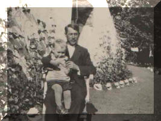

|
VIBY i gamla tider
|
||||
|
Folket på och kring Viby nr 3 första decennierna på 1900-talet |
||||

Sven och Kerstin Månsson med barnen, ca1920. Längst bak sönerna Arvid och Nils. Flickorna från vänster: Anna och Maja samt Rut. |
|
Uppställning för fotografering vid allén, 1908. På hästarna Henning Fredriksson och Ola Persson (Gröd-Ola), däremellan Sven Nilsson (Bosten). Bakom hundarna Sven Nyström och P A Almgren (folkskollärare) och till höger om trädet Nils Månsson framför Sven Månsson med Anna i famnen, Kerstin med Arvid i handen och bredvid pigorna Bertha Nilsson samt Hilda och Amanda Mårtensson. |
||
| På hästarna redo för dagens arbete. C:a 1920 | Råghöstnad c:a 1910 söder om allén | |||
 |

|
|||
| Från vänster Sven Nyström, Per Nyström, Harald Strömberg samt Nils och Arvid Månsson. Framför hästarna poserar Sven Månsson med hunden Fellow. |
Personerna på bilden: fr v. Sven Nyström, pigan Amanda, Henning Fredriksson, pigorna Hulda och Hilda, Ola Persson (Gröd-Ola), Viktor Ottosson, Nils Svensson (Bosten). Husen i bakgrunden är fr v Fredrikssons, Roskvists, Else-Karls. Sven Paulssons |
|||
| Potatisplockning på "backen" | ||||

|

Vibyholm |
|||
| Potatisplockning något år mellan 1915-20.Längst till vänster står Elna Fredriksson, mannen med hatten mitt i bilden är Sven Nyström, till höger om honom står närmast Anna Göransson med sonen Torsten och längst till höger Slumpa-Sissan. | ||||
| FAMILJEN NYSTRÖM | ||||
 |
||||
|
 |
Familjen Anna och Sven Nyström ca 1940. Pojkarna från vänster: Sture, Nisse och Sven-Erik. | Sven Nyström med äldste sonen Sven-Erik utanför trädgårdstrappan på Viby 3. Året är 1926. | ||
|
Sven Månsson
hade den unge ”pågen” Sven Nyström med sig från Balsby, vilken han också
städslade som dräng redan när denne var knappt femton år fyllda, och som
snart blev Vibyholms förstedräng under många år framöver.
Sven Nyström var vår nuvarande engagerade medlem och expert på Viby i
gamla tider, Sven-Erik Nyströms far. Då Sven-Olof också lyckats engagera
Sven-Erik som sakkunnig, var det en spännande och upplysande bild om
jordbruk, levnadsstandard och övriga förhållande från 1900-talets början
och några årtionden framåt, som målades upp. Inte minst blev man åter
imponerad av Sven-Eriks minne av årtal, namn och historier på och
omkring personerna på de gamla fotona. |
||||
|
Från kassaböckerna kan nämnas att Sven Nyström fick inför sin konfirmation ut en krona i lön och den skulle användas för inköp av ett par tofflor! |
Några årtionden längre fram i kassabokföringen (1940) kunde vi läsa att också Sven-Erik gjort dagsverken åt Sven Månsson och erhållit tjugo kronor i lön för detta. Dock påpekar Sven Månsson här att detta belopp var en krona för mycket! |
|||


{kind=link}
{kind=link}
{kind=link}